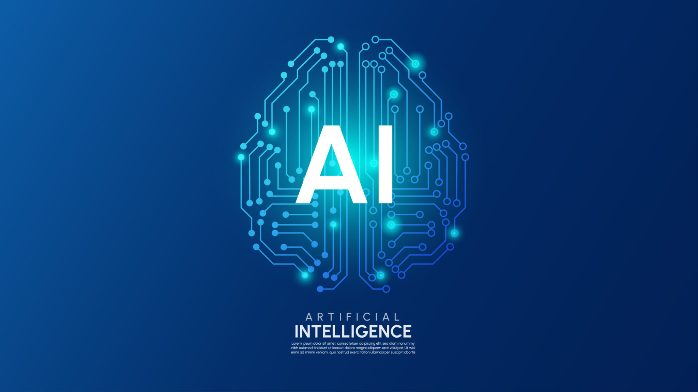

Dans le cadre de mon BTS SIO option SISR, cette veille technologique porte sur l’intelligence artificielle et son évolution rapide. L’IA est aujourd’hui un élément central de la transformation numérique des entreprises.
Elle est utilisée aussi bien pour automatiser des tâches que pour analyser des données complexes, améliorer la sécurité et optimiser les systèmes d’information.
